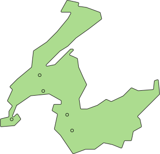

Qui sommes nous ?
Semences de pays développe une production de semences reproductibles , rustiques et adaptées à une agriculture biologique proche des cycles de la nature, en collaboration avec les iinitiatives nourricières de proximité.
Nos semences
potimarron français
cucurbita maximaPotimarron orange en forme de toupie au caractéristique gout de chataigne. Le plus ancien potimarron débarqué sur le continent.
bleuet blauer junge
centaurea cyanusLes délicats pétales de cette magnifique fleur des champs s’emploient pour embellir vos salades et séchés, les pétales se mettent dans les mélanges de tisanes
haricot à rames borlotto
phaseolus vulgarisCette variété traditionnelle italienne de haricots à écosser. Gousses zébrées de rouge donne une belle récolte de graines de plusieurs couleurs.
semis : de mai à juillet
Distance : tout les 60 cm, disposer 6 à 8 graines en cercle
Profondeur : 2 cm
Découvrez nos trésors de biodiversité sur le shop !
AllerNos points de ventes
Chez Mamie
Rue des Rois 171204 Genève
Le Topinambour
Avenue William-Fraisse 91006 Lausanne
Ferme du Joran
Chemin des Philosophes 151350 Orbe
Le Grainier
Route des Mines de Sel 131880 Bex
Nouvelle Terre
Rue du Grand-Verger 121920 Martigny